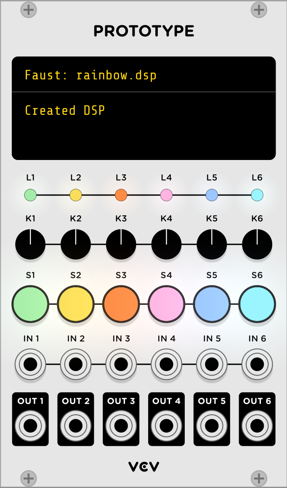

Using Faust with VCV Rack
VCV Rack is virtual modular synthesizer, allowing thousands of separated developed modules to be connected in patches to synthesize and process sounds. A large community of developers are providing tons of modules to be installed in the application as libraries, and a lot of them are developed as open-source projects on GitHub.

In this tutorial, we'll show how to use the Faust language to generate monophonic or polyphonic modules:
- either using the Faust aware programmable VCV Prototype to edit/compile/test Faust DSP code
- or using the faust2vcvrack tool with allows to generate standalone modules
- to introduce module development, a quick introduction on using C++ to develop modules will be done first.
Installation
Get the binary version for your OS here: https://vcvrack.com/Rack.
Install the VCV Rack SDK
From Plugin Development Tutorial page here: https://vcvrack.com/manual/ and the SDK itself for your OS: https://vcvrack.com/downloads/.
Don't forget to setup the RACK_DIR variable: export RACK_DIR=<Rack SDK folder>.
Compiling the VCV Prototype module Faust version
The Faust compiler can be embedded in applications or plugins using libfaust, and DSP code can be edited and JIT compiled on the fly.
You'll have to clone and compile the GitHub project from here: https://github.com/VCVRack/VCV-Prototype/tree/faust. Be use to use the faust branch and follow the explanations given here: https://github.com/VCVRack/VCV-Prototype/blob/faust/Faust.md.
Then you should be ready for this workshop !
The modular principle
VCV Rack follows the Modular synthesizers principe explained on this Wikipedia article:
Modular synthesizers are synthesizers composed of separate modules of different functions. The modules can be connected together with patch cords, a matrix patching system, or switches by the user to create a patch. The output (voltages) from the modules may function as (audio) signals, control voltages, or logic/timing conditions. Typical modules are oscillators (operate on frequency), filters (spectrum), amplifiers/gates (amplitude) and Envelope generators (dynamic control).
To do that, control signals (CV) run at audio rate, and so the entire patch is triggered with audio buffers of only one sample. When described as CV signals, parameters can thus be changed in real-time by other signals coming from any module, just by connecting them. So a kind of blur between audio and control signals is part in this model and signals can be connected anywhere.
Since software modules mimic real physical ones, they somewhat follow the same conventions to represent signal range, typically with [-5v...5v] or [0v..10v] values, or 1V/octave for MIDI signals. Read the voltage standard page for a more complete description.
Control parameters can also be changed from the module GUI using switches, knobs.etc...
Modules can be monophonic or polyphonic (up to 16 channels), where each cable actually transport several (usually related) signals. The polyphonic model is obviously used for instruments, but can also be used for effects. Polyhonic modules have thicker cables in the GUI.
Developing C++ Modules
Before using Faust to develop modules, let's have a look at the standard procedure. Modules are usually created with C++ using the VCV Rack SDK that gives developers several tools to start with. Following the tutorial here, a template project can be created:
Generating a template
./helper.py createplugin MyPlugin
The created folder contains a Makefile that can be used to compile and install the module in your (previously installed) VCV Rack application:
make && make install
GUI description using SVG
The module GUI is done using SVG. Developers will classically prepare the background layer with Inkscape or a similar tool, with special conventions to describe audio or CV inputs/outputs, UI items (knobs, lights, custom widgets... ). Here a example of a basic SVG template with a light, a param (like knob), an audio or CV input, and an audio or CV output:

Inside the module project, the following command will decode the SVG file and generate template C++ code to create the various widget:
../helper.py createmodule MyModule res/MyModule.svg src/MyModule.cpp
Adding DSP code
Then C++ code will be added to implement as simple oscillator in the process function:
float phase = 0.f;
float freq = 440.f;
void process(const ProcessArgs &args) override {
// Accumulate the phase
phase += freq * args.sampleTime;
if (phase >= 0.5f)
phase -= 1.f;
// Compute the sine output
float sine = std::sin(2.f * M_PI * phase);
// Audio signals are typically +/-5V
outputs[SINE_OUTPUT].setVoltage(5.f * sine);
}
The following line in plugin.cpp has to be uncommented:
p->addModel(modelMyModule);
and well as in plugin.hpp:
extern Model* modelMyModule;
And compilation and installation of the module has to be done again:
make && make install
Programming using the Faust aware VCV Prototype module
The VCV Prototype module run scripting languages for prototyping, learning, and live coding. It can currently be programmed using JavaScript, Lua, Vult, or PureData. A generic GUI with 6 inputs/outputs (either audio or CV signals), 6 knobs, 6 lights (RGB LEDs) or 6 switches (with RGB LEDs) is defined.
Note that only monophonic examples can be coded with the propotype.

Faust support thanks to libfaust embedding the Interpreter backend has been added. It allows to edit/compile/execute DSP programs on the fly, with acceptable peformances (even if using the LLVM JIT would allow to generate faster code, but as the expense of a much more complicated installation procedure).
The VCV Prototype module faust branch has to be used for now.
Editing/compiling/executing DSP files
Faust DSP files have to be loaded in VCV Prototype and edited in a external editor (Visual Studio Code, Atom...). Each time the file is saved, it will be recompiled and executed. To possibly save compilation time, the DSP machine code is saved in a cache, and possibly restored the next time the session will be loaded.
The 6 audio inputs/outputs can be accessed in order in the Faust DSP which can thus use up to 6 channels.
The 6 switches, knobs as well as the lights and switchLights can be connected to UI controllers using metadata:
[switch:N](with N from 1 to 6) has to be used in abuttonorcheckboxitem to connect it to the prototype interface switch number N[knob:N](with N from 1 to 6) has to be used in avslider,hsliderornentryitem to connect it to the prototype interface knob number N. The knob [0..1] range will be mapped to the slider/nentry [min..max] range[light_red:N|light_green:N|light_blue:N](with N from 1 to 6) has to be used in avbargraphorhbargraphitem to connect it to the prototype interface light number N[switchlight_red:N|switchlight_green:N|switchlight_blue:N](with N from 1 to 6) has to be used in avbargraphorhbargraphto connect it to the prototype interface switchLight number N
So a button or checkbox UI item can use the [switch:N] metadata to be associated with the corresponding GUI switch, which color can be controlled using the switchlight_xx:N metadata. For instance:
gate = button("gate [switch:1") : hbargraph("[switchlight_red:1]", 0, 1);can be written to describe a button which become red when pressedcheck = checkbox("check [switch:2]") : vbargraph("[switchlight_red:2]", 0, 1) : vbargraph("[switchlight_green:2]", 0, 1) : vbargraph("[switchlight_blue:2]", 0, 1);can be written to describe a checkbox which become white when checked
Other metadata:
[scale:lin|log|exp]metadata is implemented.
The rack.lib Faust library contains usefull functions to convert CV signals, and can be enriched if needed.
Note that only monophonic DSP programs can be described.
DSP examples
Here is a simple example showing how oscillators can be controlled by GUI items, associated with metadata in the DSP code:
import("stdfaust.lib");
// UI controllers connected using metadata
freq = hslider("freq [knob:1]", 200, 50, 5000, 0.01);
gain = hslider("gain [knob:2]", 0.5, 0, 1, 0.01);
gate = button("gate [switch:1]");
// DSP processor
process = os.osc(freq) * gain * 5, os.sawtooth(freq) * gain * gate * 5;
Following the VCV Prototype model, note that audio outputs are multipled by 5 to follow the [-5v..5v] range convention.
The VCV Prototype standard examples ported to Faust can be seen in the examples folder:
- gain.dsp shows how switches and knobs can be connected using metadata , and even change color when pressed or moved:
// Simplest possible script using all variables
import("stdfaust.lib");
// Switch button, highlight in red
switch(i) = button("switch%i [switch:%i]") : hbargraph("[switchlight_red:%i]", 0, 1);
// Gain slider, highlight in red
gain(i) = hslider("gain%i [knob:%i]", 0.1, 0, 1, 0.01) : hbargraph("[light_red:%i]", 0, 1);
process = si.bus(6) : par(i, 6, *(gain(i+1)) * (1-switch(i+1)));
- vco.dsp shows an oscillator with frequency controlled by a knob and a CV pich signal (following the 1V/octave convention):
// Voltage-controlled oscillator example
import("stdfaust.lib");
// Create a phasor with a given frequency
phasor(freq) = freq/ma.SR : (+ : decimal) ~ _ with { decimal(x) = x-int(x); };
// Pitch to freq conversion (also included in the rack.lib library)
cv_pitch2freq(cv_pitch) = 440 * 2 ^ (cv_pitch - 0.75);
gain = hslider("gain [knob:1]", 0.1, 0, 1, 0.01) * 10 - 5;
pitch(x) = x + gain;
process(x) = sin(2 * ma.PI * phasor(cv_pitch2freq(pitch(x)))) * 5;
Some additional examples:
-
synth.dsp demonstrates how to use all different VCV Prototype UI items
-
organ.dsp demonstrates a MIDI controllable additive synthesis based organ
-
physicalmodel.dsp demonstrates a modal synthesis based bell connected to a reverb
Using faust2vcvrack
The faust2vcvrack tool compiles a Faust DSP program in a folder containing the VCV Rack plugin C++ source code and a Makefile to compile it. By default the resulting C++ code is compiled and installed in the VCV Rack application:
faust2vcvrack [-soundfile] [-source] [-nvoices <num>] [additional Faust options (-vec -vs 8...)] <file.dsp>
The tool is now part of the master-dev branch on GitHub, or can be used with Faust IDE, and by selecting the appropriate export targets (vcvrack, vcvrack-poly8, or vcvrack-poly16).

Here are the available options:
-soundfile when compiling a DSP using the 'soundfile' primitive, add required resources-source to only create the source folder-nvoices <num> to produce a polyphonic self-contained DSP with <num> voices, ready to be used with MIDI
Faust DSP code classically produces audio signals in the [-1..1] range. Since VCV expects audio signals in the [-5v..5v] range, they are automatically converted in the architecture file. CV control in the [0v..10v] volts range will be mapped to the controllers [min..max] range.
Polyphony support
Polyphonic modules can be created using the -nvoices <num> parameter up to 16 voices. The freq/gate/gain convention can be used in the DSP code. VCV Rack follows the 1V/octave convention for MIDI pitch values, so the MIDI signals are automatically converted to freq using this convention. Gain and gates signals (using the [0v..10v] range) are converted to [0..1] values.
Note that creating polyphonic effects also make sense in VCV Rack. For instance a reverb connected to a polyphonic instrument would need to be polyphonic. Thus the -nvoices <num> parameter can also be used in this case.
Metadata
Controllers (typically buttons, sliders, nentry or bargraph) will be automatically transformed in GUI items (like switches, knobs or lights). But they can alternatively be connected to CV inputs/outputs using a metadata:
[CV:N]can be used in input (typically sliders or nentry) or output (typically bargraph) controllers to connect them to CV instead of regular GUI parameters.
DSP examples
Here is a simple example showing how oscillators can be controlled by UI items. One switch, one button and two knobs will be created in the GUI:
import("stdfaust.lib");
freq = hslider("freq", 200, 50, 5000, 0.01);
gain = hslider("gain", 0.5, 0, 1, 0.01);
gate = button("gate");
check = checkbox("check");
// DSP processor
process = os.osc(freq) * gain * gate, os.sawtooth(freq) * gain * check;
A polyphonic instrument with freq/gate/gain controllers associated with VC MIDI inputs, using the [CV:N] metadata, to be compiled with the -nvoices <num> option:
import("stdfaust.lib");
// control variables
master = hslider("master", 0.3, 0, 2, 0.01);
pan = hslider("pan", 0.5, 0, 1, 0.01);
freq = nentry("freq [CV:1]", 440, 20, 20000, 1);
gate = button("gate [CV:2]");
gain = nentry("gain [CV:3]", 0.3, 0, 10, 0.01);
// relative amplitudes of the different partials
amp(1) = hslider("amp1", 1.0, 0, 3, 0.01);
amp(2) = hslider("amp2", 0.5, 0, 3, 0.01);
amp(3) = hslider("amp3", 0.25, 0, 3, 0.01);
// panner function
panner(pan, x) = x*sqrt(1-pan), x*sqrt(pan);
// additive synth: 3 sine oscillators with adsr envelop
partial(i) = amp(i+1)*os.osc((i+1)*freq);
process = sum(i, 3, partial(i))
* (gate : vgroup("1-adsr", en.adsr(0.05, 0.1, 0.1, 0.1)))
* gain : vgroup("2-master", *(master) : panner(pan));
This polyphonic instrument can then be connected to a polyphonic reverb, to be also compiled with the -nvoices <num> option: